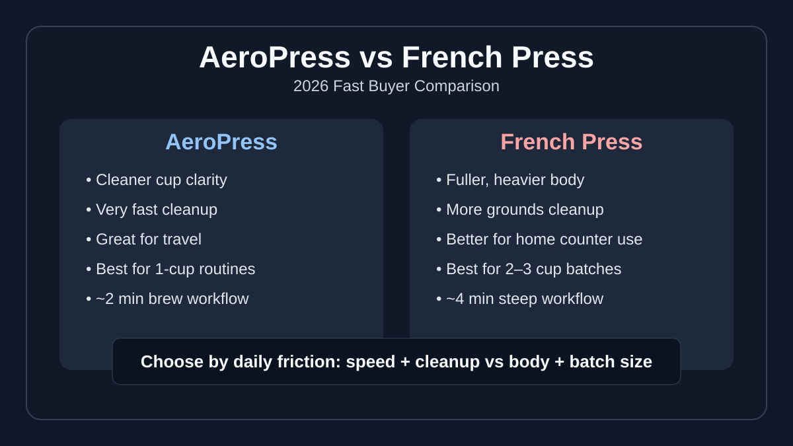

AeroPress vs French Press (2026): Fast Buyer Decision Guide
Both brewers are affordable and beginner-friendly, but they produce very different cups and workflows. If you care about low-mess mornings and cleaner flavor, one wins quickly. If you want heavier body and multi-cup volume, the other is usually the better buy.

Quick answer: Buy AeroPress if you want cleaner cups, faster cleanup, and portability. Buy French Press if you want a fuller body and usually brew 2-3 cups at once. Most single-cup weekday drinkers prefer AeroPress; slower weekend or shared brews usually favor French Press.
Side-by-side comparison
| Category | AeroPress | French Press |
|---|---|---|
| Taste profile | Cleaner cup, lower sediment, brighter clarity | Heavier body, richer mouthfeel, more sediment |
| Brew speed | ~2 minutes active brew | ~4 minutes steep + plunge |
| Cleanup effort | Very low (puck eject + rinse) | Medium-high (wet grounds disposal + mesh rinse) |
| Portability | Excellent for travel and office kits | Lower portability, especially glass models |
| Batch size fit | Best for single-cup brewing | Better for 2-3 cups per brew |
| Beginner forgiveness | High with standard recipes | High, but grind quality matters more |
| Grinder dependency | Moderate | High for reducing sludge and over-extraction |
Taste and cup profile differences
AeroPress cups are usually cleaner and more focused because paper filtration removes more fines and oils. You get better flavor separation, especially with lighter roasts.
French Press cups emphasize body and texture because metal mesh lets more oils and micro-fines through. If you prefer heavier mouthfeel over clarity, French Press is often more satisfying.
For better grind match by brew method, use our best coffee grinder for French Press and best coffee grinder for pour over guides.
Workflow speed and cleanup burden
AeroPress is faster in real life: short brew, instant puck eject, quick rinse. French Press takes longer to clean because wet grounds stick to glass and mesh screens. If weekday friction matters, AeroPress usually wins.
Whichever brewer you choose, repeatability improves when your ratio is fixed. Start with the baselines in our coffee brewing ratio guide and keep grind quality stable with this burr grinder cleaning routine.
Buy this if... / Skip this if...
AeroPress
Buy this if... you brew one cup at a time, want cleaner flavor, and value easy cleanup plus portability.
Skip this if... you frequently brew for 2-3 people and want heavy-bodied cups without paper filters.
French Press
Buy this if... you prefer fuller body, often brew multiple cups, and do not mind a slower cleanup routine.
Skip this if... you dislike sediment or need a low-mess, travel-friendly morning workflow.
Best supporting gear picks
- Best Coffee Grinder for French Press — if you want cleaner press cups with less sludge.
- Best Manual Coffee Grinder Under $100 — best value for travel/manual brewing kits.
- Best Coffee Scale for Espresso & Pour Over — improves repeatability for both brewers.
- Best Gooseneck Kettle for Pour Over — useful if you also brew AeroPress with controlled pouring.
- Best Coffee Maker with Grinder — if you want convenience automation over manual brewing.
- Best Single-Serve Coffee Maker with Grinder — if one-cup speed matters more than manual ritual.
FAQ
Which is better for beginners: AeroPress or French Press?
AeroPress is usually easier for beginners because cleanup is faster and recipes are forgiving. French Press is also beginner-friendly but is more sensitive to grind consistency and grounds cleanup.
Does French Press always taste stronger than AeroPress?
French Press often tastes stronger due to heavier body and more suspended fines. AeroPress can still brew strong coffee, but the cup typically tastes cleaner and less dense.
Which brewer is better for travel?
AeroPress is better for travel. It is compact, durable, and fast to clean in limited sink conditions.
Do I need a burr grinder for both methods?
You can brew without one, but a burr grinder improves both methods. The improvement is bigger for French Press because poor grind consistency increases sludge and bitterness.
Can one ratio work for both AeroPress and French Press?
Not perfectly. You can start from 1:15, then tweak by brewer. AeroPress often tastes better a touch stronger, while French Press usually benefits from slightly coarser grind and longer steeping.